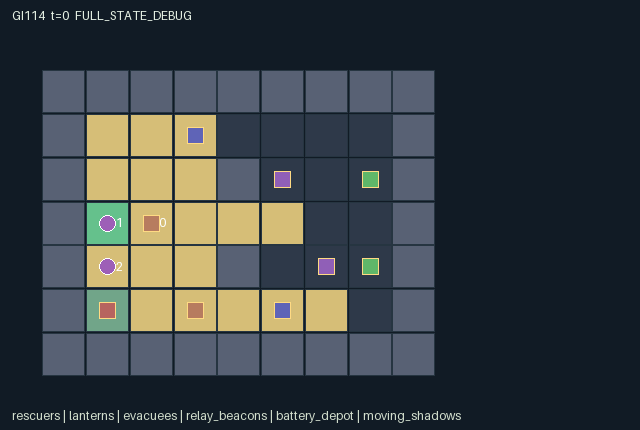

GI114 / SPATIAL
灯笼救援与移动阴影
负重搬运者只能进入已照亮格点，点灯者、搬运者与跑腿者需协调灯光和伤员。
Original saved demonstration
Recorded native state, often authored scripts or interventions; information scope and failures are preserved in the original provenance. This is a saved demonstration, not live browser play.

Release verification episode
Untrained uniform legal actions. Actual JAX state sampled along the full original episode; full-state debug camera. No human performance or learning claim.

Run this game
crucibles play --game 114
Start Python locally, then open the address printed by the terminal. Installation, multiplayer, takeover and keyboard controls →
Objective, rewards & ending
Exact task contract
{
"objective": "Physically carry both evacuees from the east rooms to the shelter at (1,3) before all rescuers are disabled or tick 128.",
"natural_termination": "Both evacuees rescued, or every rescuer has zero health; natural completion has priority over timeout on the same tick.",
"interaction": "Lantern and beacon illumination changes other roles visibility and the cells a loaded carrier can enter. Shared battery stock, exclusive bulky carrying, object competition, relay timing and moving dark hazards create action-dependent coordination.",
"observation_access": "Each role sees its own status and public time/rescue totals. Current cell visibility uses a 17-sample rounded cell ray and Manhattan distance: radius one regardless of light, or radius four in illuminated cells. Shadows additionally require illumination. No other map cells, shadow phase, distant inventories or unseen object positions enter the role observation. Renderer uses the same visibility arrays.",
"transition_order": "Movement uses pre-step illumination; rotating object interactions follow; charge/relay timers tick; shadows move every third tick; new light determines damage; rescue and terminal state are then evaluated."
}Declared per-step reward bounds: -1.0 to 11.0. Observability: partially_observable.
Rules
- Carry both evacuees to the green shelter. A loaded carrier may enter only cells lit at the start of its step.
- Grounded or carried lit lanterns illuminate radius three through sampled clear cell rays. Lit relay posts provide the same radius.
- The lighter cannot carry evacuees; the carrier cannot pick up lanterns; the runner can carry either one bulky item.
- A lantern spends one battery unit each tick it is on. Recharging transfers up to eight units from the finite depot.
- Pulsing an adjacent relay spends four held-lantern units and gives twelve subsequent displayed illumination ticks.
- Moving shadows hurt unlit rescuers. A disabled rescuer drops its item; rescuers may share floor cells.
- Role views hide unseen cells and objects. The omniscient debug state is not a policy observation.
- This package is authored and statically screened only; no successful run or learning result is claimed.
Original mechanism document (historical status wording retained)
# Lantern rescue and moving shadows
Status: **AUTHORED_NOT_EXECUTED**. Candidate `game-v3-00114`, source attempt 0, source split train, final test unused.
## Spatial rules and cross-agent dependence
This is a 9 by 7 cooperative rescue map with three roles, two evacuees, two portable lanterns, two relay posts, one finite battery depot and two moving shadows. The eastern evacuees must physically reach the shelter at (1,3). A rescuer carrying an evacuee cannot also carry a lantern. Role 0 may handle lanterns but cannot lift evacuees; role 1 may lift evacuees but cannot pick up lanterns; role 2 may do either. Agents can share cells, so the essential dependency is illumination and inventory rather than incidental body blocking.
A burning lantern or charged relay illuminates Manhattan radius three subject to the implemented 17-sample rounded-cell ray. This is the exact discrete sight rule, not a continuous ray-tracing claim. Loaded-carrier movement checks illumination in the old state. Consequently an escort moving the light changes the carrier's next feasible destination, and moving a light away can strand a carrier. A lamp may also be grounded and left burning. Lighting and position are not a scalar reward ledger: they enter movement permission, visual access and damage.
A live lamp burns one charge unit per tick, including while grounded. Near the depot, a holder transfers up to eight of its remaining sixteen stock units into a lamp, capped at sixty-four. A holder may instead spend four lamp units to charge a nearby relay; the next displayed state has twelve relay ticks. These actions trade portable coverage against a stationary safe route and finite fuel. A zero-fuel switched-on lamp does not illuminate. Fuel is decremented before damage, so entering on the last unit is a real timing risk.
Two shadow positions advance along the six-cell eastern loop every three ticks. The random initial phase belongs to reset state and is not a policy field. An agent co-located with a shadow after the phase/fuel update loses one health if the cell is unlit. At zero health the role becomes inactive and drops its object. Unrescued evacuees remain recoverable; all roles disabled is natural failure. Sheltered evacuees are removed from the active entity set and counted once. Each live transition pays all roles five per new rescue, minus one quarter per hit and a one-hundredth time cost.
## Partner-dependent strategies and limits
A moving escort can accompany one carrier while the runner establishes the southern relay or returns with spare fuel. Alternatively, grounding a lantern and charging a post can free the runner's single bulky-item slot for the second evacuee. Splitting the lamps may expose more cells but leaves less redundant coverage. Waiting for a partner's light, spending scarce stock and choosing which evacuee to retrieve first all depend on the partner's actions. Shared rewards alone do not enforce cooperation, and an inactive or unhelpful escort can prevent useful carrier progress.
The role view is deliberately incomplete: each living observer sees radius-one cells or illuminated cells within radius four, always through its own sight rays. Distant lantern charge, evacuee carrier and shadow positions are not supplied. A shadow sprite also requires its cell to be illuminated. Current visibility has no automatic memory. Time and rescue totals are public; private shadow phase is omitted. Dynamic render tiles mark illuminated floor using the same state illumination, and the map visibility binding prevents a role renderer from revealing distant light or geometry.
Changing relay placement, wall apertures, shadow timing or the role permitted to lift either object would change which escorts and routes are useful. Those are unimplemented variation proposals. Neither this source nor an eventual successful rescue would establish transfer to them.
## Prospective witness and causal comparison
The main seed-11401 script aims to escort the northern evacuee toward the shelter while the runner carries the spare lamp to the southern beacon. It is a finite action witness hypothesis, not a claim that either event occurred or that both evacuees were rescued. The paired script freezes the same pickup prefix and the carrier's actions, then changes only the lighter's toggle action. Its intended contrast is a later carrier movement succeeding under continued light and failing after darkness. Record actual carrier coordinates, light grids, visibility and damage. The runner's light, occlusion, accidental prerequisite failures or an implementation defect could make an intended contrast zero or indeterminate. No reward improvement or survival difference is required.
## Literal source evidence
- Discrete line-of-sight sampling: `candidate.py:15` contains `ray = jnp.round(sources[:, None, None, :] + delta *`.
- Light depends on actual source charge and switch: `candidate.py:30` contains `lit = jnp.any(lamp_rays & lamp_near & (s['lamp_on'] & (s['lamp_charge'] > 0))[:, None], axis=0)`.
- Renderer floor illumination binding: `candidate.py:48` contains `n['render_tiles'] = jnp.where((s['tiles'] == 0) & n['illumination'], 4, s['tiles']).astype(jnp.int32)`.
- Role-local map visibility: `candidate.py:51` contains `visible = self.sight(n['agent_pos'], cells, n['tiles']) & (`.
- Loaded carrier depends on pre-step light: `candidate.py:131` contains `can_walk = (s['tiles'][target[:, 1], target[:, 0]] != 1) & ((s['agent_evac'] < 0) |`.
- Complementary lifting capability: `candidate.py:151` contains `pick_evac = (a[i] == 6) & (i != 0) & (held_evac < 0) & (held_lamp < 0) & jnp.any(free_evac)`.
- Finite shared battery transfer: `candidate.py:158` contains `amount = jnp.where((a[i] == 8) & (held_lamp >= 0) & near_depot,`.
- Relay battery expenditure: `candidate.py:164` contains `pulse = (a[i] == 9) & (held_lamp >= 0) & n['lamp_on'][safe_li] & (n['lamp_charge'][safe_li] >= 4) & jnp.any(near_beacon)`.
- Dark-shadow damage: `candidate.py:175` contains `hit = touched & ~n['illumination'][n['agent_pos'][:, 1], n['agent_pos'][:, 0]] & n['agent_active']`.
- Natural success/failure: `candidate.py:185` contains `n['terminated'] = jnp.all(n['evac_rescued']) | ~jnp.any(n['agent_active'])`.
- Absorbing terminal projection: `candidate.py:190` contains `n = {k: jnp.where(s['done'], s[k], n[k]) for k in s}`.
Method ranges: sight at candidate.py:12-20; lighting at candidate.py:22-33; refresh at candidate.py:35-62; reset at candidate.py:64-93; observe at candidate.py:95-118; legal_actions at candidate.py:120-122; raw_step at candidate.py:124-193.
## Literal interface and execution boundary
The author supplied three-agent flat float32 observations, int32 joint actions, fixed-shape dictionary state and homogeneous discrete command attempts. The exact dimensions, every leaf, every observation column, reward bounds, actions and spatial bindings are in manifest.json. Unmet command prerequisites produce no effect; out-of-range integers are converted to wait. Each live raw transition advances t once. Natural completion takes precedence over an equal-tick timeout. Already-terminal raw calls preserve every state leaf, observation and clock, return zero reward and preserve actual terminal causes. There is no raw autoreset.
No candidate was imported or called. No JAX/NumPy import, compilation, numerical game call, training, model API, installation, SSH or remote work occurred during authoring. Standard-library AST and supplied data validators may establish only their literal static checks. They do not establish interface execution, numerical parity, conservation over actual traces, strategic richness, solvability, policy learning or transfer. AUTHORED_NOT_EXECUTED is the package status. The JaxMARL-compatible public dictionary adapter, real replay, RGB animation, interactive playback and role-view audit belong to the separately authorized implementation/validation stage and are not delivered or claimed here.
The playthrough JSON uses literal seeds and joint integer vectors. A trusted runner should use jax.random.PRNGKey(seed) for reset, then jax.random.fold_in(reset_key, step_index+1) for raw-step keys; these are prospective instructions and were not executed. All four kernels use step keys only as interface inputs, so their transition stochasticity is reset-derived. Scripts stop at joint done. They are author hypotheses, not successful trajectories or acceptance gates. Paired tests freeze the shared prefix and the non-intervened actions; they must retain zero, negative, mixed, failure and indeterminate outcomes.
The source uses int32 for small integer categories, owners and counters and bool for masks/terminal causes. The uint32 PRNG key remains trusted trajectory provenance rather than a duplicated state leaf. Render data is declarative. Map and entity positions bind real state. An omniscient debug state, where provided later, must be labelled separately and never substituted for a role observation.
## Official ecosystem inspiration and source use
Only this batch's physically supplied official README excerpts were read for broad ecosystem context: JaxMARL separates MARL environments and algorithms and exposes multi-agent interfaces; Pgx exemplifies JAX-native board states, legal action masks and explicit step randomness; Craftax illustrates persistent spatial game state, inventories and separate reset/render interfaces. These are conceptual influences. No upstream source code, environment layout, asset, baseline or algorithm was copied into this original kernel.
The supplied JaxMARL README identifies Apache-2.0, the Pgx README Apache-2.0, and the Craftax README MIT. Those are descriptions of upstream snapshots, not a new license grant for this package; an original-package release license remains the coordinator's decision. PureJaxRL describes algorithm implementations rather than an environment library. Craftax_Baselines_ppo_rnn.py was supplied and hash-accounted for but was not opened or reused. No baseline replaces the frozen experimental learner. Exact source snapshot URLs and hashes are in generation_record.json; no batch-external source or candidate feedback was consulted.
Generating or replaying these rules would not establish large-scale meta-RL adaptation. Rule/role/map variations discussed above are future research hypotheses requiring their own frozen source, cost and information controls, and genuine train/develop/confirm/final-transfer evidence. They are not implemented variants or measured generalization.
Commands
Roles & abilities
agent_0 Lighter: may carry a lantern but cannot lift evacuees
agent_1 Carrier: may lift an evacuee but cannot pick up lanterns
agent_2 Runner: can carry either one lantern or one evacuee
Observation permissions
Training receives only the original observation rows. Role cameras use declared visibility; debug cameras are explicitly marked. Local benchmark records log debug exposure and role takeover history.
Exact observation layout
[
{
"slice": [
0,
3
],
"meaning": "Self role one-hot: lighter 0, evacuee carrier 1, flexible runner 2",
"visibility": "self"
},
{
"slice": [
3,
5
],
"meaning": "Self x,y divided by 8",
"visibility": "self"
},
{
"slice": [
5,
6
],
"meaning": "Self health divided by 3",
"visibility": "self"
},
{
"slice": [
6,
7
],
"meaning": "Self held lantern identity plus one, divided by 2; zero means none",
"visibility": "self"
},
{
"slice": [
7,
8
],
"meaning": "Self carried evacuee identity plus one, divided by 2; zero means none",
"visibility": "self"
},
{
"slice": [
8,
9
],
"meaning": "Public elapsed ticks divided by 128",
"visibility": "public"
},
{
"slice": [
9,
10
],
"meaning": "Public rescued evacuees divided by 2",
"visibility": "public"
},
{
"slice": [
10,
73
],
"meaning": "Row-major base terrain /3 at visible cells, minus one elsewhere",
"visibility": "local"
},
{
"slice": [
73,
136
],
"meaning": "Row-major current illumination at visible cells, minus one elsewhere",
"visibility": "local"
},
{
"slice": [
136,
154
],
"meaning": "Three visible rescuer records: x/8,y/8,health/3,(lamp+1)/2,(evacuee+1)/2,active; all six entries minus one when unseen",
"visibility": "local"
},
{
"slice": [
154,
166
],
"meaning": "Two visible lantern records: x/8,y/8,charge/64,(owner+1)/3,on,visible=1; all six entries minus one when unseen",
"visibility": "local"
},
{
"slice": [
166,
176
],
"meaning": "Two visible evacuee records: x/8,y/8,rescued,(carrier+1)/3,visible=1; all five entries minus one when unseen",
"visibility": "local"
},
{
"slice": [
176,
184
],
"meaning": "Two visible relay records: x/8,y/8,ttl/12,visible=1; all four entries minus one when unseen",
"visibility": "local"
},
{
"slice": [
184,
188
],
"meaning": "Visible battery depot record: x/8,y/8,stock/16,visible=1; four minus ones when unseen",
"visibility": "local"
},
{
"slice": [
188,
194
],
"meaning": "Two lit and locally visible shadow records: x/8,y/8,visible=1; all three entries minus one when unseen",
"visibility": "local"
}
]Entity visibility & attributes
[
{
"id": "rescuers",
"kind": "agent",
"count": 3,
"position": [
"agent_pos"
],
"active": [
"agent_active"
],
"visibility": [
"agent_visible"
],
"attributes": [
{
"state_path": [
"health"
],
"meaning": "Health, initially three; zero disables this role",
"display": "bar"
},
{
"state_path": [
"agent_lamp"
],
"meaning": "Held lantern identity, minus one means none",
"display": "category"
},
{
"state_path": [
"agent_evac"
],
"meaning": "Carried evacuee identity, minus one means none",
"display": "category"
}
]
},
{
"id": "lanterns",
"kind": "object",
"count": 2,
"position": [
"lamp_pos"
],
"active": [
"lamp_active"
],
"visibility": [
"lamp_visible"
],
"attributes": [
{
"state_path": [
"lamp_owner"
],
"meaning": "Carrier identity, minus one means grounded",
"display": "category"
},
{
"state_path": [
"lamp_charge"
],
"meaning": "Remaining lantern battery units",
"display": "bar"
},
{
"state_path": [
"lamp_on"
],
"meaning": "Lantern switch state",
"display": "flag"
}
]
},
{
"id": "evacuees",
"kind": "object",
"count": 2,
"position": [
"evac_pos"
],
"active": [
"evac_active"
],
"visibility": [
"evac_visible"
],
"attributes": [
{
"state_path": [
"evac_carrier"
],
"meaning": "Carrier identity, minus one means uncarried",
"display": "category"
},
{
"state_path": [
"evac_rescued"
],
"meaning": "Already delivered to the shelter",
"display": "flag"
}
]
},
{
"id": "relay_beacons",
"kind": "landmark",
"count": 2,
"position": [
"beacon_pos"
],
"active": [
"beacon_active"
],
"visibility": [
"beacon_visible"
],
"attributes": [
{
"state_path": [
"beacon_ttl"
],
"meaning": "Remaining relay illumination ticks",
"display": "bar"
}
]
},
{
"id": "battery_depot",
"kind": "resource",
"count": 1,
"position": [
"depot_pos"
],
"active": [
"depot_active"
],
"visibility": [
"depot_visible"
],
"attributes": [
{
"state_path": [
"depot_stock"
],
"meaning": "Remaining shared battery units",
"display": "bar"
}
]
},
{
"id": "moving_shadows",
"kind": "hazard",
"count": 2,
"position": [
"hazard_pos"
],
"active": [
"hazard_active"
],
"visibility": [
"hazard_visible"
],
"attributes": []
}
]Actual verification & provenance
Per-game execution receipt
{
"game": "gi114",
"status": "PASS",
"verification_revision": 2,
"source_sha256": "16ebb97c9c761db5da08d58d3254d08995165d8b40b8c8222c044731c723a8ba",
"seed": 20261101,
"runtime": {
"jax": "0.4.38",
"numpy": "1.26.4",
"devices": [
"TFRT_CPU_0"
]
},
"dimensions": {
"num_agents": 3,
"observation_size": 194,
"num_actions": 10,
"max_steps": 128
},
"checks": {
"eager_reset": {
"status": "PASS",
"seconds": 5.122146129608154
},
"observation_spaces_legal_masks": {
"status": "PASS",
"seconds": 0.21907377243041992
},
"eager_step": {
"status": "PASS",
"seconds": 1.8506505489349365
},
"jit_reset": {
"status": "PASS",
"seconds": 0.394594669342041
},
"jit_step": {
"status": "PASS",
"seconds": 1.7032082080841064
},
"eager_jit_integer_parity_float_measurement": {
"status": "PASS",
"seconds": 0.001031637191772461
},
"jit_vmap_reset": {
"status": "PASS",
"seconds": 0.6143648624420166
},
"jit_vmap_step": {
"status": "PASS",
"seconds": 1.8904929161071777
},
"outer_autoreset_api": {
"status": "PASS",
"seconds": 1.8265883922576904
},
"full_original_horizon_episode_and_render": {
"status": "PASS",
"seconds": 0.7652738094329834
}
},
"human_scores": null,
"browser_controls": "PENDING",
"failures": [],
"elapsed_seconds": 14.954368591308594,
"float_parity_max_abs": 0.0,
"numerical_parity": "EXACT",
"raw_terminal_absorbing": "PASS",
"terminal_outer_reset": "PASS",
"episode_steps": 128,
"scripted_random_returns": [
-2.0299999434500933,
-2.0299999434500933,
-2.0299999434500933
],
"terminal": true,
"demo_information": "FULL_STATE_DEBUG",
"demo_frames": 27,
"render_roles_checked": 3
}Chromium control verification
{
"game": "gi114",
"status": "PASS",
"human_scores": null,
"engineering": true,
"checks": [
"catalog_selected_and_real_native_reset",
"dom_queue_and_native_step",
"second_participant_ownership_and_native_joint_step",
"all_roles_individually_controllable_no_role_cap",
"explicit_debug_camera",
"release_to_pure_ai_without_reset"
],
"ui_sha256": "15b5861d23b3c42811865c954d5a988280bbfd21cf8e93754be2437a027158c5",
"seconds": 6.361977815628052
}Original identity and file hashes
{
"id": 114,
"key": "gi114",
"title": "灯笼救援与移动阴影",
"summary": "负重搬运者只能进入已照亮格点，点灯者、搬运者与跑腿者需协调灯光和伤员。",
"tags": [
"照明协作",
"分工救援"
],
"family": "spatial",
"dimensions": {
"num_agents": 3,
"observation_size": 194,
"num_actions": 10,
"max_steps": 128
},
"source_sha256": "16ebb97c9c761db5da08d58d3254d08995165d8b40b8c8222c044731c723a8ba",
"manifest_sha256": "38fbc834e8faa6ba7fd7bd6ff21085cabffb006069737ceef5979a7170ad6695",
"files": [
{
"file": "candidate.py",
"sha256": "16ebb97c9c761db5da08d58d3254d08995165d8b40b8c8222c044731c723a8ba",
"bytes": 13669,
"origin": "work/exp_2/game_incubator_v3/community_games222_225_visualization_root222_v1/native154_candidate/registry/v2/games/game-v3-00114/candidate.py"
},
{
"file": "manifest.json",
"sha256": "38fbc834e8faa6ba7fd7bd6ff21085cabffb006069737ceef5979a7170ad6695",
"bytes": 18017,
"origin": "work/exp_2/game_incubator_v3/community_games222_225_visualization_root222_v1/native154_candidate/registry/v2/games/game-v3-00114/manifest.json"
},
{
"file": "scene.json",
"sha256": "2e4d0162ed8588ae1df6e3a711cdd429e0a79bbb7de07524d6d7a9eb9bec78e5",
"bytes": 9086,
"origin": "work/exp_2/game_incubator_v3/community_games222_225_visualization_root222_v1/native154_candidate/registry/v2/games/game-v3-00114/scene.json"
},
{
"file": "mechanism.md",
"sha256": "6c5069f194c6d15c56f5eaed5d4a32690932a8fef27a8a3653cc0410ebf9624c",
"bytes": 10622,
"origin": "work/exp_2/game_incubator_v3/sources/game-v3-00114/attempt_00/mechanism.md"
},
{
"file": "playthrough.json",
"sha256": "0be93200b2058be873ff60c10505759f09f6bc21c8ee9508982a0f2ce39e4383",
"bytes": 4231,
"origin": "work/exp_2/game_incubator_v3/sources/game-v3-00114/attempt_00/playthrough.json"
}
],
"original_status": "NATIVE154_REFERENCE",
"original_saved_replay": true,
"release_validation": "PASS",
"human_scores": null,
"browser_validation": "PASS"
}